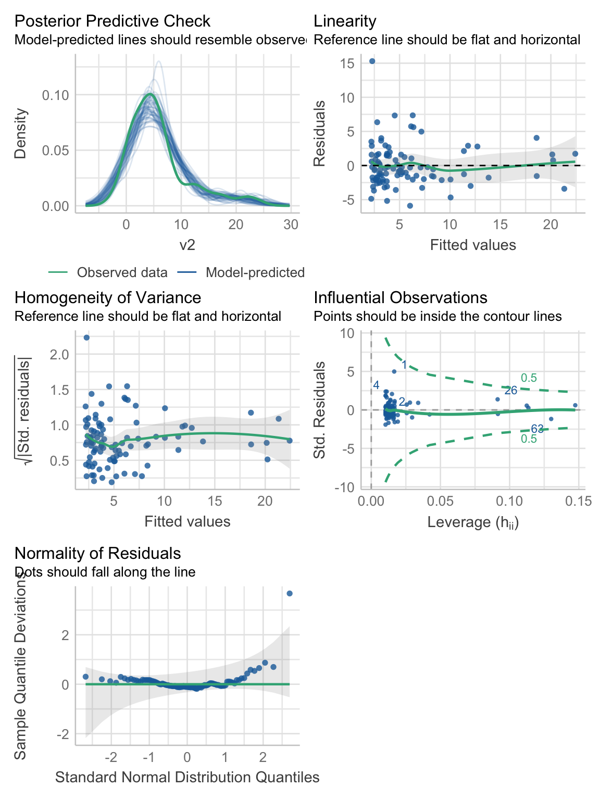
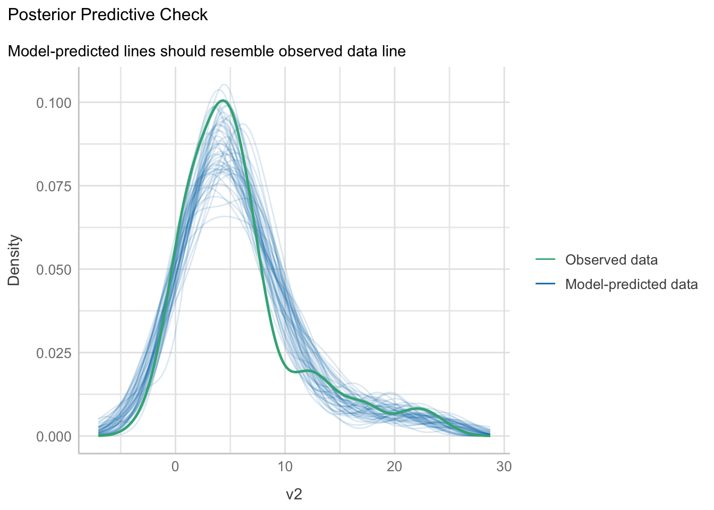
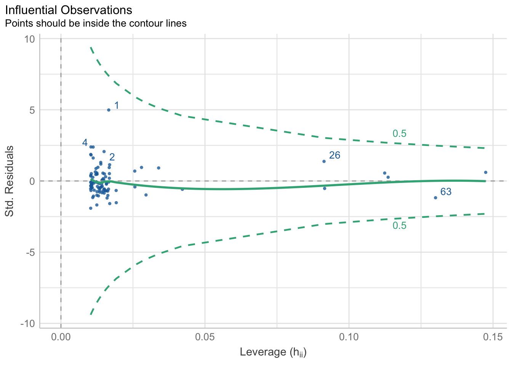
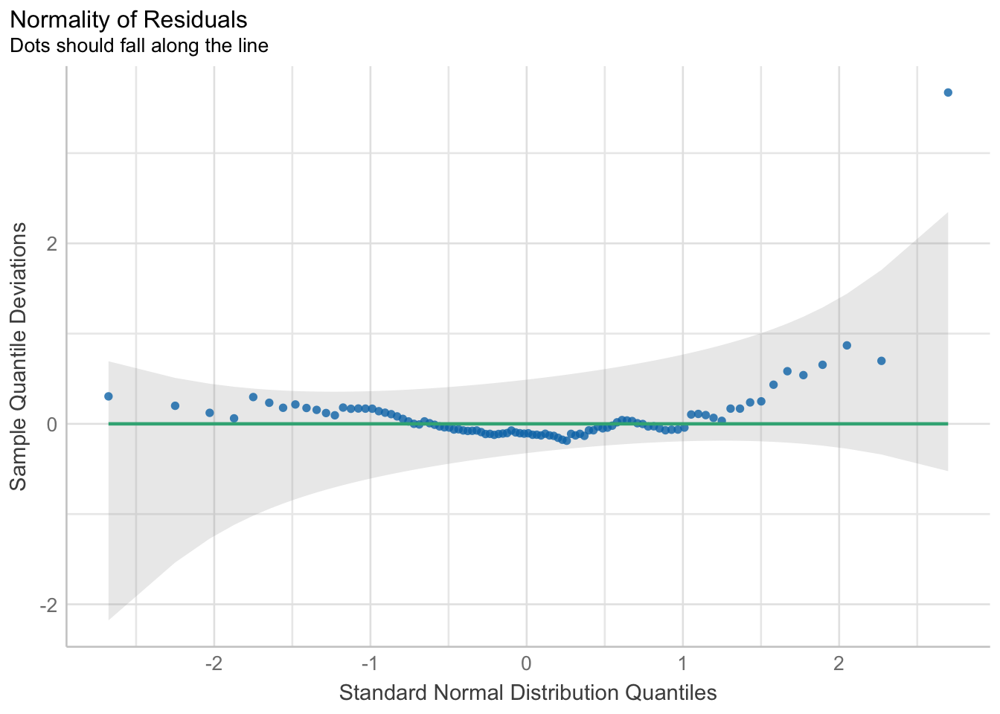

library(ggplot2)
library(performance)
library(stats4)
library(Metrics)11 Modelo lineal
11.1 Librerías
11.2 Introducción
En muchísimos lugares encontramos, de forma completamente natural, patrones que se repiten una y otra vez, tal y como en la música. El mundo de la estadística y del aprendizaje automatizado se construye de la misma manera, partiendo de pequeños motivos que aparecen una y otra vez. En esta sesión vamos a hablar de el, posiblemente, más popular de todos: el modelo lineal. Hablaremos entonces del caso más básico y escalaremos paso a paso en la complejidad.
11.3 Regla de tres y el modelo lineal
Antes de empezar a hablar propiamente de la regresión lineal, sus diferencias con la correlación, en qué consiste, cómo aplicarlas y demás detalles, demos un paso hacia atrás y expliquemos el fundamento con manzanitas (literalmente).
Imagina que te digo que gasté 50 pesos para comprar 10 manzanas y luego te pregunto ¿cuánto cuesta una? Para responder a la pregunta aplicarás, aunque no seas consciente, el modelo lineal, pero primero resolvamos el problema con una regla de tres
\[\begin{align*} 10 üçé = \$50 \\ 1üçé = ? \end{align*}\]
Aqu√≠ multiplicar√≠amos \(1üçé \times 50\$\) y dividimos entre \(10üçé\), lo cual nos lleva a decir que una manzana me cost√≥ 5\(\$\):
\[ \frac{1üçé \times 50 \$}{10üçé} = 5\frac{\$}{üçé} \]
Hasta aqu√≠ nada nuevo, as√≠ que hagamos ese resultado a un lado por el momento y volvamos al problema del modelo lineal. ¿En qu√© consiste un modelo lineal? En utilizar la ecuaci√≥n de la recta (\(y = a + bx\)) para establecer una relaci√≥n (lineal, dah) entre dos variables. Con nuestras manzanas podemos representarlo de la siguiente manera, donde \(y\) es el dinero (\(\$\)) gastado para alguna cantidad de manzanas (üçé):
\[ \$ = a + b*üçé \]
¿Qué representan \(a\) y \(b\) Empecemos, por simplicidad didáctica, definiendo \(b\):
\[\begin{align*} Si \\ \$ = a + b*üçé \\ \Rightarrow \$ - a = b*üçé \\ \therefore \frac{\$ - a}{üçé} = b \end{align*}\]
Este pequeño ejercicio algebráico nos dice que \(b\) es el resultado de dividir nuestro precio (menos \(a\)) entre el número de manzanas. ¿Te suena? ¡Es el precio por una manzana! Te preguntarás: ¿entonces **qué es \(a\) y por qué no lo consideramos antes? Para darle sentido pensemos en qué haría que ambas aproximaciones nos lleven al mismo resultado: que \(a\) fuera 0, ¿no? Pues eso tiene todo el sentido del mundo, pues es el precio de 0 manzanas. Tomando esto en cuenta podemos asignarle nombre a nuestros distintos elementos:
- \(y\) es nuestra variable dependiente (lo que queremos predecir); es decir, el número de pesos gastados.
- \(x\) es nuestra variable independiente (con lo que vamos a predecir); es decir, el número de manzanas compradas.
- \(a\) es la ordenada al origen o intercepto, representada como \(\beta_0\) o \(\alpha\), indica el precio de 0 manzanas. Matemáticamente esto lo definimos como el punto donde la recta corta a la ordenada (eje y) o, en palabras más sencillas, el punto donde x = 0.
- \(b\) es la pendiente, representada como \(\beta_1\) o \(\beta\), e indica el precio de una manzana. Formalmente es la tasa de cambio que existe del eje \(x\) al eje \(y\); es decir, “cuántas unidades nos vamos a mover en el eje y por una unidad en el eje x”.
¿Por qué se le denomina lineal? Porque si lo graficamos tendremos una línea recta:
manzanas <- seq(1,10)
b <- 5
a <- 0
precio <- data.frame(manzanas, precio = a+b*manzanas)
ggplot(data = precio, aes(x = manzanas, y = precio)) +
geom_line(color = "dodgerblue4") +
geom_point(color = "dodgerblue4") +
scale_x_continuous(breaks = scales::pretty_breaks()) +
see::theme_lucid() +
labs(title = "Precio por cantidad de manzanas (n)",
subtitle = "Modelo: $ = 0 + 5*n",
x = element_blank(),
y = element_blank())Aunque esto nos lleva a un pequeño inconveniente o una consideración. Si utilizamos un modelo lineal estamos asumiendo explícitamente (aunque a veces inconscientemente) que el cambio entre nuestras variables es constante, determinado por \(\beta\). Reflexiona: ¿en la naturaleza cuántos procesos crees que sean realmente lineales? Con esto no quiero decir que debamos de olvidarnos del modelo lineal y que, entonces, esta sesión es una pérdida de tiempo, no. Quiero decir que debemos de ser consciente del supuesto bajo el cual estamos trabajando, muchas veces para simplificarnos la existencia.
Nota
¿Recuerdas la definición formal de un modelo? Es una representación SIMPLIFICADA de la realidad; es decir, siempre que involucremos un modelo, sea cual sea, estamos dejando cosas en el tintero. Recuerda: “Todos los modelos están equivocados, pero algunos son útiles” (Box, 1976).
11.4 Regresión lineal simple
Antes mencioné que la regla de tres es una aplicación del modelo lineal, lo que no dije es que es, en realidad, un ejercicio de regresión. ¿Qué es una regresión? Es una parte del aprendizaje automatizado supervisado, del cual hablaremos con más lujo de detalle en la sección correspondiente, pero podemos definirla como el proceso de estimar los parámetros de un modelo matemático a partir de ciertos datos. En una regresión la variable dependiente siempre es continua. ¿Qué pasa si tenemos una variable dependiente categórica? Entonces estamos en un escenario de clasificación, pero no nos adelantemos.
Nota
¿Qué es el aprendizaje automatizado? Por el momento entiendelo como la filosofía de “enseñar con ejemplos” llevada a modelos matemáticos y predicciones. En cualquier modelo de aprendizaje automatizado supervisado tenemos una serie de ejemplos (datos), en los cuales una o más variables sirven como predictoras de otra(s); es decir, el objetivo es generar buenas predicciones.
Nota
¿Qué es un parámetro en este contexto? Una manera fácil de entender los parámetros de un modelo es verlos como perillas que regulan cómo se transforma lo que está a la derecha del símbolo de igualdad para llegar a lo que está a la izquierda. Si te das cuenta es básicamente lo que sucede con las distribuciones de probabilidad, y con justa razón: las distribuciones de probabilidad son, en sí mismas, modelos. No confundas esta definición con la definición de parámetro poblacional.
Ahora bien, hay una gran cantidad de m√©todos de auste de una regresi√≥n, pero todos se reducen a una cosa: minimizar una funci√≥n de p√©rdida. ¿Qu√© es una funci√≥n de p√©rdida y con qu√© se come? Es una forma rebuscada de llamarle a la distancia que existe entre nuestros valores observados y los valores predichos por el modelo o, en palabras más sencillas, qu√© tan lejos qued√≥ la flecha del blanco; es decir, al ajustar un modelo estamos minimizando su error. ¿Cuáles valores predichos? Aaaah, que bueno que preguntaste. Si vuelves a la Figura 11.2 te darás cuenta que, utilizando los parámetros estimados con nuestra regla de tres (\(a\) = 0 y \(b\) = 5) calculamos cuánto gastar√≠amos si compraramos desde 1 hasta 10 manzanas. De esos costos solo ten√≠amos el dato de que \(10 üçé = \$50\), todo lo demás es una predicci√≥n.
Nota
Lo que hicimos fue, de hecho, una extrapolación, pues predijimos valores fuera del alcance de nuestros datos observados. Si tuvieramos “huecos” en nuestros datos y quisiéramos rellenarlos con el modelo tendríamos una interpolación; es decir, predeciríamos valores dentro del alcance de nuestros datos observados.
Pero volvamos a nuestra regresión lineal. El modelo más simple es el que veremos en esta sesión: la regresión lineal simple. En esta, tal y como en nuestro ejemplo con las manzanas, describimos la relación entre dos variables continuas utilizando la ecuación de la recta. Formalmente este lo expresamos como:
\[ Y = \beta_0 + \beta_1*x + \epsilon \]
Mencioné que existen distintas formas de ajustar sus parámetros, entre las que tenemos (ordenadas de mayor a menor complejidad):
- Mínimos cuadrados, que veremos a continuación.
- Máxima verosimilitud, que también veremos a continuación.
- Inferencia Bayesiana, que en realidad incluye como caso especial a la máxima verosimilitud.
- Descenso estocástico de gradiente, en ciertos escenarios de redes neuronales.
Empecemos entonces con el ajuste por mínimos cuadrados.
11.4.1 Mínimos cuadrados
En este método de ajuste la función de pérdida es la función cuadrática:
\[ D(y_i - \hat{y_i}) = \sum_{i=1}^n(y_i - \hat{y_i})^2 = \sum_{i=1}^n \epsilon^2 \]
Es decir, minimizamos la distancia (diferencia) cuadrática entre los valores observados y los valores predichos. Analíticamente (cálculo) el proceso consiste en obtener la derivada parcial de \(D(y_i - \hat{y_i})\), igualarla a 0, y encontrar una expresión para \(\beta_0\) y \(\beta_1\). Te voy a ahorrar toda la matemática correspondiente y te daré, solo como referencia, estas últimas expresiones. Para \(\beta_1\):
\[ \beta_1 = \frac{\Sigma_{i = 1}^n(x_i - \overline{x})(y_i - \overline{y})}{\Sigma_{i = 1}^n(x_i - \overline{x})^2} \]
Y para \(\beta_0\):
\[ \beta_0 = \overline{y}- \beta_1*\overline{x} \]
¿Por qué solo como referencia? Porque (afortunadamente para nosotros) R ya tiene codificado todo el proceso en la función lm(formula, data) y no tenemos que preocuparnos por nada de eso.
Nota
Recordarás que en el Capítulo 4 hablé (y ejemplifiqué) sobre cómo ajustar una regresión lineal simple, tanto con R como con tidymodels. En esta sesión tidymodels aún nos queda “un poco grande”, en el sentido de que aún no podemos aprovechar todo lo que ofrece, por lo que me voy a limitar a utilizar la forma de R base.
Para ejemplificarlo carguemos los datos contenidos en example_data.csv:
df_reg1 <- read.csv("datos/example_data.csv")Luego grafiquémoslos:
plot_data_reg1 <- ggplot(data = df_reg1,
aes(x = v1, y = v2)) +
geom_point(color = "dodgerblue4",
alpha = 0.7,
size = 2) +
labs(title = "Relación entre v1 y v2") +
see::theme_lucid()
plot_data_reg1
11.4.1.1 Ajuste y Bondad de ajuste
Ahora ajustemos el modelo de mínimos cuadrados (lm()) a los datos y veamos los resultados de la regresión (summary()):
reg1 <- lm(v2~v1, data = df_reg1)
summary(reg1)
Call:
lm(formula = v2 ~ v1, data = df_reg1)
Residuals:
Min 1Q Median 3Q Max
-5.8956 -1.9924 -0.5525 1.5351 15.3006
Coefficients:
Estimate Std. Error t value Pr(>|t|)
(Intercept) -3.72654 0.73213 -5.09 1.81e-06 ***
v1 1.17765 0.08141 14.47 < 2e-16 ***
---
Signif. codes: 0 '***' 0.001 '**' 0.01 '*' 0.05 '.' 0.1 ' ' 1
Residual standard error: 3.095 on 95 degrees of freedom
Multiple R-squared: 0.6878, Adjusted R-squared: 0.6845
F-statistic: 209.3 on 1 and 95 DF, p-value: < 2.2e-16Describamos la salida elemento por elemento:
Call: es el cómo llamamos a la función. ¿La razón? En caso de que estemos llamando a la funciónlmdentro de otra función, cosa que no hicimos. De cualquier manera, sirve como una forma de verificar que pusimos las cosas en orden. -Residuals: Nos da información sobre la distribución de los residuales (la diferencia entre observado y predicho). Esta es útil con fines diagnósticos, pero hablaremos más a fondo de ellos más adelante.Coefficients: Nos da una tabla con los valores de los parámetros del modelo, donde la pendiente tiene el nombre de la variable predictora, su error estándar y una prueba \(t\) para cada uno. ¿Contra qué está comparando? Contra un modelo nulo; es decir, contra un modelo donde ese parámetro tenga un valor = 0.Residual standard error: Más información sobre los residuales, aunque en este caso es el error estándar. Este es sumamente útil para darnos una idea de qué tan preciso es el modelo, pues indica en cuántas unidades, en promedio, se desvía la predicción de los datos observados. Este valor, dividido entre el promedio de la variable predicha nos da la tasa de error del modelo.Multiple R-squared: Es el valor del famosísimo (¿infame?) coeficiente de determinación (\(R^2\)). Si ya has llevado clases de estadística y de regresión lineal es muy posible que lo entiendas como “la varianza de los datos explicada por el modelo”. ¿Por qué digo infame? Porque, al igual que el valor de p, es un valor del cuál se abusa. Nuevamente, los seres humanos somos flojos por naturaleza, por lo que nos gusta resumir las cosas en un solo número. En este sentido, el \(R^2\) es una medida de bondad de ajuste; es decir, de qué tan bien ajustado está el modelo. Es muy práctico, pues está contenido en el intervalo \([0,1]\) y representa un porcentaje; sin embargo, para que podamos confiar en él debemos de haber cubierto con el resto de supuestos de la RLS. Personalmtente te sugiero mejor tomar el RSE como medida de ajuste, aunque la interpretación no sea tan directa.Adjusted R-squared: Es un ajuste al \(R^2\) que lo hace menos optimista, especialmente diseñado para escenarios de regresión múltiple (de ahí el “Multiple” del punto anterior). Por el momento lo vamos a ignorar.F-statistic: Resultados de un ANOVA que, al igual que el punto anterior vamos a ignorar porque es informativo solo en regresiones múltiples. Es un ANOVA para comparar todo el modelo contra un modelo nulo, por lo que aquí solo es redundante con las pruebas \(t\) para cada parámetro.
Nota
¿Qué es la bondad de ajuste? Como dice el nombre, qué tan bien ajustado está el modelo, en el sentido de qué tan buenas son las predicciones.
Los resultados del modelo los podemos reportar como:
En el modelo de regresión lineal simple tanto el intercepto (\(\beta_0 = -3.72\)) como la pendiente (\(\beta_1 = 1.17\)) son significativamente diferentes de 0 (\(\beta_0: t_{\nu = 95} = -5.09; p < 0.0001\); \(\beta_1: t_{\nu = 95} = 14.47; p < 0.0001\)). El valor de \(R^2\) indica que el modelo explica alrededor del 70% de la varianza de los datos, lo cual sugiere un ajuste aceptable, con un error estándar de los residuales de 3.095 unidades.
Usualmente acompañaríamos este reporte de un gráfico, el cual podemos construir con la capa geom_smooth(method = "lm", se = FALSE), tal que:
plot_reg1 <- plot_data_reg1 +
geom_smooth(method = "lm",
se = FALSE,
colour = rgb(118,78,144,
maxColorValue = 255)) +
labs(caption = paste("Modelo ajustado: v2 = ",
round(reg1$coefficients[1],2),
" + ",
round(reg1$coefficients[2],2),
"*v1 + e"))
plot_reg1`geom_smooth()` using formula = 'y ~ x'Ahora bien, recordarás que ninguna estimación es infalible, por lo que tanto el reporte como el gráfico están incompletos. Hablemos entonces de los intervalos de confianza.
11.4.1.1.1 Intervalos de confianza para los parámetros
En un modelo de regresión lineal tenemos “dos” intervalos de confianza: los intervalos de confianza para la estimación de los parámetros y el intervalo de confianza para la regresión. Los primeros, como te imaginarás, representan la incertidumbre alrededor de la estimación de nuestros parámetros de regresión. Como recordarás de lo que mencioné en el capítulo Capítulo 8, estos se construyen a partir de su error estándar (\(IC_{95\%} = \beta ± 1.96*EE\)) y, a diferencia de lo que vimos en el Capítulo 9, ahora los obtenemos con la función confint():
confint_reg1 <- confint(reg1, level = 0.95)
confint_reg1 2.5 % 97.5 %
(Intercept) -5.179989 -2.273085
v1 1.016035 1.339263Con esta información podemos realizar un gráfico donde representemos esta incertidumbre, en donde obtengamos dos límites para la línea de regresión utilizando esos valores, tal que:
# Construimos el límite inferior con el límite del 2.5% de los intervalos
df_reg1["inf_int"] <- confint_reg1[1,1] + confint_reg1[2,1]*df_reg1$v1
# Construimos el límite superior con el límite del 97.5% de los intervalos
df_reg1["sup_int"] <- confint_reg1[1,2] + confint_reg1[2,2]*df_reg1$v1Añadiéndolos al gráfico de los datos:
plot_reg1 +
geom_ribbon(data = df_reg1,
aes(ymin = inf_int,
ymax = sup_int),
fill = "gray70",
alpha = 0.3) +
labs(subtitle = "Intervalos de confianza para los parámetros")`geom_smooth()` using formula = 'y ~ x'Pero este no es el gráfico que usualmente veremos. Si deseáramos inlcuir esta información solo añadiríamos los IC al reporte, tal que:
En el modelo de regresión lineal simple tanto el intercepto (\(\beta_0 = -3.72\); \(IC_{95\%}: [-5.18, -2.27]\)) como la pendiente (\(\beta_1 = 1.17\); \(IC_{95\%}: [1.02, 1.34]\)) son significativamente diferentes de 0 (\(\beta_0: t_{\nu = 95} = -5.09; p < 0.0001\); \(\beta_1: t_{\nu = 95} = 14.47; p < 0.0001\)). El valor de \(R^2\) indica que el modelo explica alrededor del 70% de la varianza de los datos, lo cual sugiere un ajuste aceptable, con un error estándar de los residuales de 3.095 unidades.
Advertencia
En este caso nuestros datos son “adimensionales”; es decir, no tenemos unidades de ninguna variable. Si nuestras variables no son adimensionales debemos de incluir también las unidades correspondientes (pesos, manzanas y pesos/manzana, si volvemos a nuestro ejemplo).
11.4.1.1.2 Intervalo de confianza para la regresión
¿Si el gráfico anterior no es el que presentamos, cuál es? Uno que incluya el intervalo de confianza para la regresión per-se (también llamado para la recta). ¿Recuerdas el RSE? Pues se construye con ese valor. Para incluirlo en el gráfico solo tenemos que modificar ligeramente geom_smooth() y hacer se = TRUE:
plot_reg1 +
geom_smooth(method = "lm",
se = TRUE,
colour = rgb(118,78,144, maxColorValue = 255))`geom_smooth()` using formula = 'y ~ x'
`geom_smooth()` using formula = 'y ~ x'v2 y v1. La línea morada representa el ajuste lineal, y el área sombreada el intervalo de confianza para la regresión
Nota
Estamos obteniendo dos mensajes de geom_smooth() porque en plot_reg1 ya teníamos esa capa (con se = FALSE). Diré lo obvio, pero cuando hagas tus gráficos NO es necesario que repitas capas.
Nuestro reporte completo quedaría entonces como:
En el modelo de regresión lineal simple (Figura 11.3) tanto el intercepto (\(\beta_0 = -3.72\); \(IC_{95\%}: [-5.18, -2.27]\)) como la pendiente (\(\beta_1 = 1.17\); \(IC_{95\%}: [1.02, 1.34]\)) son significativamente diferentes de 0 (\(\beta_0: t_{\nu = 95} = -5.09; p < 0.0001\); \(\beta_1: t_{\nu = 95} = 14.47; p < 0.0001\)). El valor de \(R^2\) indica que el modelo explica alrededor del 70% de la varianza de los datos, lo cual sugiere un ajuste aceptable, con un error estándar de los residuales de 3.095 unidades.
Y ahora toca abordar el “elefante en el cuarto” y comprobar que nuestra regresión sea confiable.
11.4.2 Supuestos de la Regresión Lineal
¿Qué no ya habíamos evaluado la bondad del ajuste? Sí y no. En realidad hice una pequeña trampa para que veas por qué el \(R^2\) no cuenta toda la historia, y por qué no debemos de confiar ciegamente en él. La regresión lineal simple, como buena técnica paramétrica, tiene sus supuestos:
- Linealidad: Existe una relación lineal entre las variables involucradas.
- Independencia: El error es independiente; i.e., no hay correlación entre el error de puntos consecutivos (aplica para series de tiempo).
- Normalidad: El error sigue una distribución normal.
- Homocedasticidad: El error tiene una varianza constante para cada valor de \(X\).
Nota
Te darás cuenta de que todo está en términos del “error”, tal y como hablábamos de distribuciones muestrales de la media en el capítulo Capítulo 10. Siguiendo la misma lógica, nuestras inferencias para comprobar los supuestos las haremos sobre los residuales.
Si no cumplimos con uno, varios, o ninguno, la confiabilidad de nuestro modelo de regresión para fines de interpretación va disminuyendo. Los primeros dos son bastante lógicos. El primero es auto-explicativo: si la relación no es lineal, el modelo lineal no es suficiente para describirla. El segundo tiene que ver con datos de series de tiempo y algo que se conoce como autocorrelación, pero esto se reduce a que el error del punto \(t_i\) no dependa del punto \(t_{i-1}\).
El supuesto de normalidad, para variar, requiere de un poco más de explicación: la distribución que debe ser normal es la del error. En ningún lugar se habla de que \(Y\) o \(X\) deban de estar normalmente distribuidos, solamente el error. Esto puede sonarte extraño, pero tiene todo el sentido del mundo: si estamos optimizando el modelo a partir de los residuales, ¿por qué habría de importarnos la distribución cruda de las variables?
El supuesto de homocedasticidad, por otra parte, es análogo al supuesto de homogeneidad de varianzas pero, nuevamente, nos interesa qué pasa con el error, no con las variables originales (por favor, no hagas una prueba de Levene con tus variables como grupos). En este caso lo importante es que el error sea parejo, independientemente de si tenemos valores pequeños o grandes del predictor.
¿Cómo evaluamos estos supuestos? Mayoritariamente con gráficos de dispersión, pero vamos uno a uno:
- Linealidad: Con un gráfico de residuales. En este gráfico tenemos los residuales estandarizados (cada residual menos el promedio de los residuales, dividido entre la desviación estándar) en el eje \(y\), y los valores ajustados por el modelo (predicciones) en el eje \(x\). Se pueden añadir dos referencias: una línea de referencia horizontal en \(y = 0\) y una curva LOESS (hablaremos un poco de este modelo en el Capítulo 13). Si la relación entre nuestras variables predicha y predictora es perfectamente lineal, entonces todos los puntos caerán sobre la línea de referencia y la curva LOESS será completamente horizontal en 0. Entre menos lineal sea la relación más se alejarán los puntos de la línea y mayores curvaturas tendrá el modelo LOESS. Adicionalmente, puede servir para identificar valores extremos (puntos que caigan fuera de \([-1.96, 1.96]\) si se trabaja a un 95% de confianza).
- Independencia: Con un gráfico de autocorrelación. Dado que el análisis de series de tiempo está fuera del alcance de este grupo lo vamos a obivar.
- Normalidad: Una prueba de normalidad de los residuales y con un gráfico cuantil-cuantil (QQ plot). En este gráfico se grafican (valga la redundancia) los residuales en el eje \(y\), y cuantiles teóricos según una distribución normal en el eje \(x\). Además se traza una línea de referencia con una pendiente de 1, que representa una distribución normal perfecta. El objetivo es que la prueba de normalidad sea no significativa y que los residuales caigan lo más cercanamente posible a la línea de referencia.
- Homocedasticidad: Una prueba Breusch & Pagan (1979) y un gráfico de escala-locación (scale-location). La prueba, como te imaginarás, tiene la hipótesis de nulidad de que el error (residuales) está homogéneamente distribuido. En el gráfico tenemos en el eje \(y\) la raíz cuadrada del absoluto de los residuales estandarizados (\(\sqrt{|re|}\)) y en el eje \(x\) los valores ajustados. ¿Por qué la raíz del absoluto? Ese detalle ya es clavarse demasiado, y prefiero que nos adentremos bien a otro tema un poco más adelante, así que conformemonos por saber que queremos que los puntos estén distribuidos de manera aleatoria (homogénea) en todo el eje \(x\). ¿Qué quiere decir esto? que no tengamos una mayor dispersión de los puntos (varianza de los residuales) en valores ajustados pequeños (a la izquierda del gráfico) que en los valores más grandes (derecha del gráfico), lo que se vería como un > imaginario, o viceversa, o algún otro patrón.
¿Muchos gráficos? Tal vez. Podríamos hacerlo a mano, o podemos aprovechar la librería performance y obtenerlos todos de una vez con la función check_model(object), donde object es el objeto con los resultados del ajuste. Esta función nos da todos los gráficos en un solo paso:
reg1_diags <- performance::check_model(reg1)
reg1_diags
Y se acabó el encanto. Resulta que no cumplimos con ninguno de los supuestos, y entonces nuestro \(R^2 \approx 0.7\) nos mintió vilmente. Cada quien reacciona de forma diferente a cuándo alguien le miente, pero lo que es seguro que pase es que desconfiará, al menos un poco, de todo lo que esa persona le diga en un futuro. En defensa del \(R^2\), no es su culpa y, de hecho, estoy siendo demasiado duro con él. Me explico: el \(R^2\) es confiable como medida de ajuste sí y solo si se cumplen los mismos supuestos de la regresión lineal simple, lo cual no es el caso; ergo, no podíamos confiar en él desde un principio porque nuestros datos no lo permiten. El problema es que se ha malversado su uso, y muchas personas lo utilizan como si fuera el único sello de garantía, cuando en realidad es el último.
Pero volvamos a nuestros gráficos. En la Figura 11.4 se ven muy pequeños, y hay un par que no hemos explicado:
- Posterior predictive check: Este tipo de gráficos es uno de los más socorridos en inferencia Bayesiana, para comprobar que la distribución posterior obtenida por el modelo sea consistente con los datos observados. Aquí no tenemos un modelo Bayesiano, pero sí que podemos utilizar la información de la distribución de los parámetros (estimación y error estándar) para simular datos aleatorios. Si el modelo tiene una buena capacidad predictiva, entonces los datos observados \(Y\) deben de caer dentro del área comprendida por las líneas de los datos predichos \(\hat{Y}\). En este caso, la capacidad predictiva del modelo no es del todo mala, solamente tenemos una sobre-estimación notable en valores cercanos a 10. Esto nos habla de la robustez del modelo lineal, pero no por ello hay que abusar de él.
plot(performance::check_predictions(reg1)) +
see::theme_lucid()
- Linearity: Es el gráfico de residuales. Desafortunadamente no hay una forma de obtenerlo en una sola línea, así que tocará construirlo a mano y, de paso, modificar un par de cosas. La primera es graficar los residuales estandarizados (menos su media y divididos entre su desviación estándar) para poder darnos una idea de si tenemos valores extremos o no. La segunda es asignar una escala de colores para facilitarlo. Para poder hacer esto vamos a pasarle a
ggplot()directamente el objeto de regresión, y enaes()vamos a utilizar dos atributos ocultos del objetoreg1:.fittedcon los valores predichos y.stdresidcon los residuales estandarizados. En el gráfico resultante podemos ver que hay varios valores con residuales altos (tonos rojizos), y algunos extremos (> 1.96). La curva LOESS no se ve exageradamente desviada de la línea de referencia, lo cual indica que un modelo lineal puede no ser tan mala elección.
# Inicializar el espacio gráfico
ggplot(data = reg1, # Objeto de regresión
# Datos ajustados y residuales estandarizados
aes(x = .fitted, y = .stdresid,
colour = .stdresid)) +
# Gráfico de dispersión
geom_point(size = 3,
alpha = 0.7,
show.legend = F) +
# Referencia en 0
geom_hline(yintercept = 0,
colour = "black",
linetype = "dashed") +
# Referencia loess
geom_smooth(method = "loess",
colour = "#3aaf85") +
# Gradiente de colores
# "#cd201f": color para los extremos (rojo)
# "#1b6ca8": color para el punto intermedio (0)
# Escala de -2 a 2 (debería ser 1.96)
# oob: ¿qué hacer con datos fuera de los límites?
# scales::squish : marcarlos como si estuvieran en el límite
scale_color_gradient2(low = "#cd201f",
midpoint = 0,
mid = "#1b6ca8",
high = "#cd201f",
breaks = c(-2, 0, 2),
limits = c(-2, 2),
oob = scales::squish) +
labs(title = "Linearity",
subtitle = "Reference line should be flat and horizontal",
y = "Standardized residuals",
x = "Fitted values") +
see::theme_lucid()`geom_smooth()` using formula = 'y ~ x'- Homogeneity of variance: Homocedasticidad/Heterocedasticidad. Con un poco de imaginación puedes trazar un >, indicando que hay una mayor varianza en los valores pequeños que en los valores grandes. La prueba Breusch & Pagan (1979), por otra parte, sugiere que la varianza es homogénea. Este es un típico caso donde conviene errar en el lado de la precaución y profundizar en el análisis antes de sacar una conclusión. ¿Qué pasa con nuestro > si quitamos el punto extremo con un residual estandarizado > 4? Se vuelve mucho menos marcado, ¿no? Posiblemente sea eso lo que está viendo la prueba y que no esté siendo engañada por ese punto. Dada la estructura de los datos (muchos acumulados en valores pequeños y pocos en valores grandes), yo decidiría que no se cumple el supuesto de homogeneidad de varianzas.
reg1_homoced <- performance::check_heteroscedasticity(reg1)
plot(reg1_homoced) +
see::theme_lucid()reg1_homocedOK: Error variance appears to be homoscedastic (p = 0.206).- Influential Observations: Este es otro gráfico diagnóstico que no había mencionado porque no está directamente relacionado con los supuestos. Este gráfico se conoce como gráfico de apalancamiento, y señala observaciones que pudieran estar “engañando” o afectando de manera importante la estimación de la recta. En otras palabras, que “jalen” la recta hacia ellos, por estar extremadamente lejos de la tendencia central de \(y\) para ese punto \(x\). En menos palabras: nos permite identificar “outliers”. Hay una gran cantidad de métodos, y la función
performance::check_outliers()califica cada valor con una nota compuesta por el promedio de los resultados binarios (“outlier” o no, 1 o 0) de cada método. Representa la probabilidad de que cada observación sea clasificada como “outlier” por al menos un método. Se considera un “outlier” si su calificación es superior o igual a 0.5 (líneas verdes punteadas); es decir, vamos a buscar puntos que estén fuera del “cono” formado por los contornos. En este caso ninguno está fuera del contorno, pero el punto 1 se ve sospechoso.
reg1_outliers <- performance::check_outliers(reg1)
plot(reg1_outliers)
- Normality: Por último, el gráfico de normalidad. No es de sorprender que tengamos “desviaciones de la normalidad” bastante marcadas en algunos puntos, especialmente cerca de la cola derecha de la distribución. La prueba de normalidad de los residuales también rechaza que se cumpla el supuesto.
reg1_norm <- performance::check_normality(reg1)
plot(reg1_norm, type = "qq")For confidence bands, please install `qqplotr`.
reg1_normWarning: Non-normality of residuals detected (p < .001).Independientemente de mi “bullying” al \(R^2\), ahora ya sabes todo lo que implica hacer una regresión lineal simple, y que es mucho más que simplemente picar botones en alguna suite estadística o utilizar la función lm en R o alguna otra función en otro lenguaje de programación.
11.4.3 Predicción vs. Interpretación
Ahora bien, mencioné en varias ocasiones cosas relacionadas con la “predicción” y la “interpretación”. Pues resulta que, como vimos arriba, para fines predictivos no importan demasiado los supuestos, y antes de que agarres un trinche y una antorcha escucha lo que tengo que decir. Antes te dije que la regresión forma parte del aprendizaje automatizado supervisado y, como tal, su principal (por no decir único) objetivo es la predicción. Un modelo de regresión exitoso es un modelo que pueda predecir adecuadamente, punto. ¿Y la interpretación? Esa es otra cara de la moneda. De hecho, están inversamente correlacionadas, en el sentido de que entre más poderosa es una técnica, menos interpretable es. De todos estos detalles vamos a hablar más adelante en el Capítulo 17, pero por el momento quiero que te quedes con lo siguiente:
Importante
La validación de supuestos es solo necesaria si nos interesa explicar los parámetros del modelo, no si solo nos interesan sus predicciones.
Sin ir demasiado lejos, el modelo que construimos arriba no cumple con el supuesto de normalidad (los demás están en la cuerda floja) y aún así las predicciones posteriores (en el posterior predictive check) se ven bastante aceptables. Desafortunadamente para nostros, usualmente nos interesa la interpretación, así que hay que hacer la tarea completa.
¿Y si solo me interesan las predicciones? Bueno, igual hay que verificar algunas cosas, pero eso lo veremos en el Capítulo 17.
11.4.4 Máxima verosimilitud
Bueno, ya sabemos cómo aplicar, interpretar, y validar los supuestos de una regresión lineal en R utilizando el método de mínimos cuadrados, pero antes te mencioné que también había otros métodos entre los que se encuentra el ajuste por máxima verosimilitud. Entonces es necesario explicar qué es la verosimilitud para luego ver cómo maximizarla, ¿no crees?
Recordemos por un momento lo que revisamos en el Capítulo 6 sobre la probabilidad. Dijimos que, cuando tenemos resultados mutuamente excluyentes y exhaustivos (todos los resultados), la suma de todas sus probabilidades es exactamente 1, tal que:
\[ \sum_i^n p_i == 1 \]
Hasta aquí todo bien, pero ¿dónde entra la verosimilitud? Si buscas en el diccionario de la Real Academia Española te vas a encontrar con una de sus siempre útiles definiciones: “Cualidad de verosímil”, por lo que hay que definir verosímil: “que tiene apariencia de verdadero”. Eso ya tiene más sentido. En un escenario de investigación nosotros podemos plantear múltiples hipótesis, que no son necesariamente excluyentes entre sí, entonces no podemos simplemente utilizar la probabilidad. Entendamos la verosimilitud con un ejemplo:
Imagina que alguien a quien conoces te dice que uno de sus amigos tiene poderes psíquicos. Tú, como persona de ciencia, decides ponerlo a prueba. Acuerdan una reunión y le pones un “desafío” simple: vas a lanzar diez volados, y el debe de adivinar el resultado. Al final, él adivina correctamente 7/10 volados. Sin dejarte llevar por tu escepticismo planteas algunas hipótesis: i) simple coincidencia, el tamaño de muestra no es lo suficientemente grande; ii) la moneda no es del todo “justa”, sino que tiende a caer más hacia cierto lado; iii) esta persona tiene una visión cinética sobre-humana y puede ver qué es lo que está arriba antes de que atrapes la moneda, iv) esta persona realmente tiene algo de clarividente. ¿Cuál crees que sea más verosímil? Espero que me digas que la primera hipótesis, especialmente después de lo que vimos en el Capítulo 6. Si por el contrario hubieran sido 1000 lanzamientos y hubiera adivinado 700, la historia sería otra, pero con 7/10 puede ser un capricho del mundo. Eso que hicimos fue, justamente, un ajuste por máxima verosimilitud: seleccionar la hipótesis más verosímil de entre un conjunto dado, solo que vamos a cambiar hipótesis por valores de parámetros.
¿Formalmente? Un ajuste por máxima verosimilitud consiste en estimar parámetros de un modelo, dado un conjunto de observaciones, en donde se encuentra valores que maximicen la verosimilitud de las observaciones dados los valores de los parámetros. Puesto de otra manera, buscamos el conjunto de valores que maximicen la probabilidad de que nos hayamos encontrado nuestros datos, según el modelo que escogimos. Esto se parece mucho a lo que vimos en el Capítulo 9 sobre el nivel de significancia, solo que nuestro modelo “deja de ser una distribución de probabilidades” para ser un modelo de regresión. ¿Por qué las comillas? Porque nuestro error no puede quedar “suelto”, pero en máxima verosimilitud podemos trabajar con cualquier distribución de probabilidad que se ajuste a nuestro problema; de hecho, esto es lo que da lugar a los modelos lineales generalizados, pero eso lo veremos en el Capítulo 19.
¿Cómo lo llevamos a la práctica? Primero quiero que te des la oportunidad de ver una relación interesante que puede ahorrarte mucho trabajo, o que puede abrirte la puerta a otro tipo de análisis.
11.4.4.1 Mínimos cuadrados, máxima verosimilitud e inferencia Bayesiana
Esta parte es completamente teórica y asumo que el ver procedimientos algebraicos no te supone un problema. De no ser así, puedes saltar al final para obtener la idea clave. Si decides que te interesa, vamos allá.
Recordemos que un problema de regresión consiste en estimar los parámetros de un modelo matemático dado un conjunto de observaciones, y que tenemos una gran diversidad de formas de hacerlo. Comencemos hablando del método de ajuste más común para una RLS: mínimos cuadrados. Como mencioné antes, con este método minimizamos la función de pérdida cuadrática; es decir:
\[\begin{align*} \epsilon = y - \hat{y}\\ L = \epsilon^2 \end{align*}\]
Cuando utilizamos este método asumimos algunas cosas, entre ellas que nuestros residuales (no nuestra variable) se encuentran normalmente distribuidos. Aunque este método funciona, se prefiere utilizar métodos probabilísticos (Gerrodette, 2011), tal como la aproximación por máxima verosimilitud. Antes utilizamos un ejemplo práctico para definirla, pero ahora aproximémosla desde el teorema de Bayes:
\[ p(\theta|x) = \frac{p(x|\theta)p(\theta)}{p(x)} \]
Que podemos simplificar como:
\[ Posterior = \frac{verosimilitud \times previa}{evidencia} \]
El teorema de Bayes es lo que da lugar al paradígma de la inferencia Bayesiana, el cual no vemos en este curso; sin embargo explicar el teorema es bastante sencillo: ¿qué tan probable es una hipótesis (\(\theta\)), dada cierta evidencia (datos, \(x\))? (probabilidad posterior, \(p(\theta|x)\)). Para responderlo vamos a obtener la relación que hay entre qué tan probable es la evidencia, dada la hipótesis (\(p(x|\theta)\), nuestra verosimilitud), qué tan probable creamos nosotros que es nuestra hipótesis (probabilidad previa, \(p(\theta)\)) y la probabilidad de la evidencia en sí misma (\(p(x)\)). Obtener la probabilidad de la evidencia es un tema en sí mismo (en realidad solo la aproximamos), así que lo vamos a obviarla de la ecuación. Recordarás que en la inferencia estadística frecuentista partimos del hecho de que no sabemos nada sobre nuestro problema, y podemos entonces, al menos de manera teórica, establecer eso en el teorema de Bayes, lo cual nos lleva a cancelar nuestros términos de previa y evidencia y terminar con la siguiente equivalencia:
\[ Posterior \equiv verosimilitud \]
Este caso especial de la inferencia Bayesiana tiene un nombre: Estimación Máxima A posteriori (Maximum A posteriori Estimate, MAP) y es equivalente a la estimación puntual de un ajuste por máxima verosimilitud. ¿Por qué? Porque en esa aproximación tratamos de encontrar valores de nuestros parámetros que maximicen la verosimilitud de las observaciones, dados los parámetros. De manera matemática definimos la equivalencia como:
\[ p(x|\theta) \equiv L(\theta|x) \implies p(x_1, x_2, ..., x_n|\theta) \]
Otro de nuestros supuestos en este paradigma es que las muestras son independientes entre sí, por lo que podemos expandir nuestra probabilidad conjunta con \(P(A,B) = P(A)P(B)\):
\[ L(\theta|x_1, x_2, ..., x_n) \equiv p(x_1|\theta)p(x_2|\theta),...,p(x_n|\theta)= \prod p(x_i|\theta) \]
Y este término es lo que queremos maximizar, por lo cual lo podemos escribir tal que:
\[ \begin{matrix} max \\ \theta \end{matrix} \left\{ \prod p(x_i|\theta) \right\} \]
El problema es que ni a nosotros ni a las computadoras nos gusta hacer multiplicaciones, por lo que podemos aplicar un logaritmo para convertir el productorio en una sumatoria. Recuerda: el logaritmo de un producto es igual a la suma del logaritmo de cada uno de sus componentes, por lo tanto:
\[ \begin{matrix} max \\ \theta \end{matrix} \left\{ log \left( \prod p(x_i|\theta) \right) \right\} \implies \begin{matrix} max \\ \theta \end{matrix} \left\{ \sum_i^n log(p(x_i|\theta)) \right\} \]
Esta última parte era un poco innecesaria, nada más que un breviario cultural para que conocieras por qué utilizamos logaritmos de verosimilitud, cosa que haremos más adelante, pero ahora vayamos al meollo del asunto:
Importante
Uno de los supuestos del ajuste por mínimos cuadrados es un error normalmente distribuido. En máxima verosimilitud podemos ajustar nuestro error a cualquier distribución de probabilidad. Si utilizamos a la distribución normal como la distribución del error, entonces mínimos cuadrados, máxima verosimilitud (distribución normal) e inferencia Bayesiana (verosimilitud normal y previas muy planas) dan estimaciones equivalentes.
11.4.4.2 Ajuste por máxima verosimilitud
En este punto puedes estar en uno de estos escenarios: a) lograste seguir toda la explicaci√≥n y se te hizo l√≥gica (si fue as√≠, ¬°felicidades! Eres un tan √±o√±o o √±o√±a como yo); b) seguiste la explicaci√≥n y se te hizo l√≥gica, pero no terminaste de entender el teorema de Bayes (igualmente, ¬°felicidades! Vas para √±o√±o/√±o√±a que chutas); c) lo le√≠ste pero te perdiste solo con las ecuaciones (tambi√©n ¬°felicidades!, tienes la intenci√≥n de convertirte en √±o√±o/√±o√±a); o d) saltaste directamente a lo importante (¬°felicidades a ti tambi√©n! Tienes una vida ü•≤). Si estás en los casos c y d, y puede que b seguramente no est√©s del todo convencido de que m√≠nimos cuadrados y máxima verosimlitud con un error normal sean equivalentes. Si estás en el caso a, te gustar√≠a una demostraci√≥n. ¿Y si no te interesa? Igual la vamos a hacer.
A diferencia de la implementación de una regresión por mínimos cuadrados, ajustar el modelo mediante máxima verosimilitud no es tan intuitivo. El primer paso es establecer manualmente nuestra función de verosimilitud, ajustando una distribución normal a los residuales:
data <- df_reg1[c("v1", "v2")]
LL <- function(b0, b1, mu, sigma){
# Encontrar los residuales. Modelo a ajustar
R = data$v2 - data$v1 * b1 - b0
# Calcular la verosimilitud. Residuales con distribución normal.
R = suppressWarnings(dnorm(R, mu, sigma))
# Sumar el logaritmo de las verosimilitudes para
# todos los puntos de datos.
-sum(log(R))
}Ahora ajustemos el modelo que acabamos de crear, utilizando la función stats4::mle(fun, start = list()) (*maximum likelihood estimation), donde fun es la función de verosimilitud a ajustar y start son los valores iniciales de los parámetros. En este paso lo que estamos haciendo es estimar los dos parámetros (media y desviación estándar) que mejor describen los datos:
mle_fit <- mle(LL, start = list(b0 = 1, b1 = 1, sigma = 1),
fixed = list(mu = 0),
nobs = length(data$v2))
summary(mle_fit)Maximum likelihood estimation
Call:
mle(minuslogl = LL, start = list(b0 = 1, b1 = 1, sigma = 1),
fixed = list(mu = 0), nobs = length(data$v2))
Coefficients:
Estimate Std. Error
b0 -3.726537 0.72453828
b1 1.177649 0.08056368
sigma 3.063056 0.21991454
-2 log L: 492.4402
Nota
Hay que definir valores iniciales para los parámetros porque, a diferencia de por mínimos cuadrados, el proceso de minimización del negativo de la suma del logaritmo de la verosimilitud es iterativo mediante un algoritmo de búsqueda. El más común es el algoritmo de búsqueda de Newton-Raphson (o Newton-Fourier). ¿A qué me refiero con iterativo? A que la computadora variará los parámetros hasta llegar a la solución “optima”:
Esta salida fue un poco más simple que la salida de la función lm() pero, ¿fue de diferente la estimación? Si vemos los coeficientes de nuestro ajuste por mínimos cuadrados veremos que la estimación puntual es la misma, y los errores estándares son prácticamente iguales:
summary(reg1)$coefficients Estimate Std. Error t value Pr(>|t|)
(Intercept) -3.726537 0.73212521 -5.090027 1.805160e-06
v1 1.177649 0.08140729 14.466134 9.513254e-26Además, el error estándar de la estimación por mínimos cuadrados es prácticamente igual al sigma de la estimación por máxima verosimilitud:
summary(reg1)$sigma[1] 3.095131Moraleja: no utilices estimación por máxima verosimilitud si vas a utilizar una distribución normal. Lo único que ganas es hacer pasos adicionales. ¿Cómo utilizar otras distribuciones? Eso lo veremos a detalle en el Capítulo 19.
11.5 Correlación y covarianza
Sé que la sesión hasta este momento ha sido larga y tediosa, pero el tema de regresión merece entrar a la teoría para no obtener conclusiones equivocadas. Dejemos de lado esa parte y cerremos hablando de dos conceptos relacionados: la correlación y la covarianza.
La covarianza nos indica cómo varía una variable en relación a otra. La correlación describe la relación entre dos variables. Ya me imagino la expresión de confusión que tienes mientras te preguntas ¿entonces son lo mismo? Pues no, la diferencia es que la correlación es un índice; es decir, está contenida en el intervalo \([-1, 1]\), por lo que esta mide no solo la dirección, sino la “fuerza” o el grado de linealidad de la relación, donde 0 es una relación lineal nula. Matemáticamente la diferencia es que la correlación entre dos variables es su covarianza dividida entre el producto de sus desviaciones estándar:
\[\begin{align*} cov(X,Y) = \frac{\Sigma_{i=1}^n(X_i-\bar{X})(Y_i-\bar{Y})}{n-1} \\ cor(X,Y) = \frac{cov(X,Y)}{\sigma_x * \sigma_y} \end{align*}\]
Es decir, son conceptos que están muy relacionados entre sí. En ambos el signo del valor indica la dirección de la relación, mientras que la magnitud indica la fuerza de la relación. El problema con la covarianza es que no tiene límites, entonces no puedes saber si una covarianza de 500 es particularmente grande salvo que tengas otra covarianza con la cual comparar, mientras que una correlación de 0.7 es una correlación moderadamente fuerte.
Muy seguramente por tu cabeza haya pasado la pregunta: “si ambas nos dicen cómo es la relación entre dos variables, ¿cuál es la diferencia con la regresión?”. Pues que la regresión es un modelo predictivo, mientras que la correlación/covarianza es un estadístico descriptivo. Aquí no estamos comprometiendo que haya una tasa de cambio de \(X\) hacia \(Y\), ni estamos interesados en qué valor de \(X\) le corresponde a \(y = 0\). Aquí no nos interesa predecir, sino describir. Si no quieres comprometerte con todo lo que implica un modelo predictivo (aún nos faltó ver el tema del sobre-ajuste), solo calcula el coeficiente de correlación correspondiente.
¿Por qué correspondiente? Porque tenemos más de una forma de calcular la correlación, y cada una tiene sus bemoles. La ecuación que vimos arriba es para el coeficiente de correlación de Pearson, el cual elevado al cuadrado nos da el coeficiente de determinación que vimos antes. Como tal, es un coeficiente paramétrico y tiene algunos supuestos:
- Variables en escala de intervalo o razón
- Relación lineal entre ambas variables. Sí, asume que el cambio de una variable a otra es constante.
- Normalidad Ambas variables deben de tener una distribución aproximadamente normal, por lo que aquí sí nos interesa la distribución de nuestras variables.
- Cada observación debe de tener el par de datos \((v1, v2)\).
Estos supuestos, a estas alturas, son autoexplicativos. ¿Qué pasa si no cumplimos con alguno de los primeros tres? Podemos utilizar la alternativa no paramétrica: el coeficiente de correlación \(\rho\) de Spearman. En este los supuestos son:
- Variables al menos en escala ordinal
- Relación monótona entre ambas variables; es decir, que la relación vaya en un solo sentido (conforme aumenta una aumenta la otra, o conforme aumenta la otra disminuye), independientemente de que la tasa de cambio de una a otra no sea constante.
- Cada observación debe de tener el par de datos \((v1, v2)\)
Bastante más relajado, ¿no? Pero esto no quiere decir que solo debas de utilizar este coeficiente, utiliza el que más se ajuste a tus datos particulares.
Nota
En el Capítulo 12 vamos a hablar de las técnicas no paramétricas y sus ventajas y desventajas con respecto a las técnicas paramétricas.
Ahora bien, ¿cómo obtenemos estos coeficientes en R? Muy sencillo, con las funciones cor(X, Y) y cov(X, Y):
Nota
Estos coeficientes son simétricos, por lo que asignar variables \(x\) y \(y\) como dependientes e independientes es un error. ¿Notaste que arriba todo lo puse en términos de \(v1\) y \(v2\)?
Primero, generemos un par de variables donde la segunda sea una función lineal de la primera:
df1 <- data.frame(v1 = -20:20)
df1["v2"] <- (10+2*df1$v1)
df1Ahora obtengamos la covarianza:
covar <- cov(df1$v1, df1$v2)
covar[1] 287Y el índice de correlación de Pearson:
corre <- cor(df1$v1, df1$v2)
corre[1] 1Aquí queda también demostrado por qué la covarianza es tan difícil de interpretar por sí sola, pues en este caso con una relación lineal perfecta fue de 287, pero si cambias los valores de v1 de alguna manera vas a obtener otro valor, mientras que la correlación seguirá siendo 1. Gráficamente:
ggplot(data = df1, aes(x = v1, y = v2)) +
geom_point(colour = "dodgerblue4", alpha = 0.8) +
labs(title = "Relación entre v2 y v1") +
annotate("text", x = 15, y = 0,
label = paste("R = ", round(corre, 2))) +
annotate("text", x = 15, y = -5,
label = paste("Cov. = ", round(covar, 2))) +
see::theme_lucid()
¿Qué pasa cuando nos alejamos de esta relación lineal?
df1["v3"] <- (-df1$v1^2)
corre <- cor(df1$v1, df1$v3)
covar <- cor(df1$v1, df1$v3)
ggplot(data = df1, aes(x = v1, y = v3)) +
geom_point(colour = "dodgerblue4", alpha = 0.8) +
labs(title = "Relación entre v2 y v1") +
annotate("text", x = 15, y = 0,
label = paste("R = ", round(corre, 2))) +
annotate("text", x = 15, y = -50,
label = paste("Cov. = ", round(covar, 2))) +
see::theme_lucid()Otro ejemplo:
df1["v4"] <- sin(df1$v1)
corre <- cor(df1$v1, df1$v4)
covar <- cor(df1$v1, df1$v4)
ggplot(data = df1, aes(x = v1, y = v4)) +
geom_point(colour = "dodgerblue4", alpha = 0.8) +
labs(title = "Relación entre v2 y v1") +
annotate("text", x = 15, y = 3,
label = paste("R = ", round(corre, 2))) +
annotate("text", x = 15, y = 2,
label = paste("Cov. = ", round(covar, 2))) +
expand_limits(y = c(5, -3)) +
see::theme_lucid()Aunque todas estas relaciones pueden ser predichas, un coeficiente de correlación lineal no es capaz de capturarlas y, por definición, tampoco un modelo de regresión lineal. ¿Qué hacer en estos casos? Veremos algunas alternativas en el Capítulo 13. Ahora ejemplifiquemos el coeficiente de correlación de Spearman. Primero, y para dejar más claro el concepto, veamos la diferencia entre una relación monótona y una no monótona:
df2 <- data.frame(v1 = df1$v1[df1$v1 > 0],
v2 = df1$v1[df1$v1 > 0]^2,
mono = "monótona")
df2 <- rbind(df2, data.frame(v1= df1$v1,
v2 = df1$v3,
mono = "no monótona"))
ggplot(data = df2, aes(x = v1, y = v2)) +
geom_point(colour = "dodgerblue4", alpha = 0.8) +
facet_wrap(~mono, nrow = 2, scales = "free_y") +
see::theme_lucid() +
theme(aspect.ratio = 1/1.61)Y ahora calculemos los coeficientes de correlación de Pearson y Spearman para la relación monótona. La diferencia fue de 0.3, lo cual no es muy grande, pero conforme nos empezamos a alejar de escenarios ideales el coeficiente de Pearson empieza a perder sensibilidad y confiabilidad.
paste("Pearson = ",
round((cor(df2$v1[df2$mono == "monótona"],
df2$v2[df2$mono == "monótona"],
method = "pearson")), 2)
)[1] "Pearson = 0.97"paste("Spearman = ",
round((cor(df2$v1[df2$mono == "monótona"],
df2$v2[df2$mono == "monótona"],
method = "spearman")), 2)
)[1] "Spearman = 1"Ya para cerrar, ¿son estos los únicos coeficientes de correlación? Para nada, tenemos también: \(\tau\) de Kendall, \(\phi k\) (Baak et al. (2019)), V de Cramer, Predictive Power Score y el coeficiente de Máxima Información (Reshef et al. (2011)). Te invito a que leas más sobre ellos, sus ventajas y sus desventajas. Predictive Power Score no es direccional, por ejemplo (Figura 11.6).
Por fin llegamos al final de esta extensa (pero espero no aburrida) sesión. Espero que la hayas encontrado útil, y que te motive a hacer toda la chamba detrás de un modelo de predicción como lo es la regresión lineal simple.
11.6 Ejercicio
Aunque me encantaría que para esta sesión no hubiera ejercicio, es importante que practiques lo que discutimos aquí. El ejercicio que vas a realizar es realizar una regresión entre las variables LT (longitud total) y AM (altura máxima) de los datos de peces haemúlidos de los datos Haem.csv. Responde:
- La regresión asume un cambio direccional entre las variables \(X\) y \(Y\); es decir, el cambio en una modifica a la otra. ¿Cuál es la variable dependiente? ¿
LToAM? ¿Por qué? - Calcula la correlación entre ambas variables. ¿Qué coeficiente utilizas y por qué?
- Realiza la regresión lineal simple. ¿Qué método de ajuste utilizas y por qué?
- Reporta los resultados de la regresión (incluyendo el gráfico correspondiente).
- Realiza la comprobación de los supuestos. ¿Es confiable el modelo para fines de predicción? ¿Y para interpretación?